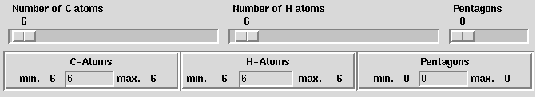
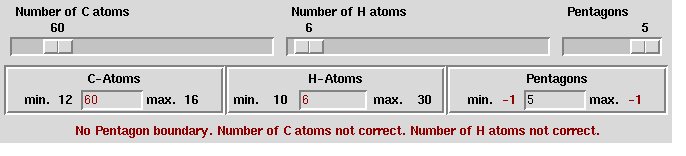
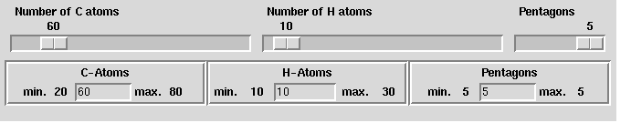
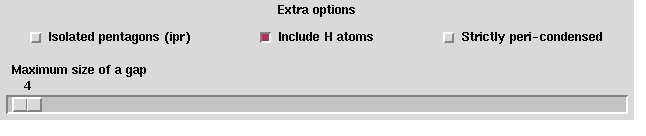

Up : Main
Prev : Generation programs
Next : CPF
CaGe V0.3
HCgen
HCgen is a generation program which generates hydrocarbon structures.
Each carbon atom has bonds to exactly three other atoms where these atoms are
either carbon atoms or hydrogen atoms. Carbon atoms are always part of either
pentagon or hexagon rings (compare section fullgen
).
Basic options:
Choose the number of carbon atoms by using the slider
"Number of C atoms" or the "C-Atom" entry.
Choose the number of hydrogen atoms by using the slider
"Number of H atoms" or the "H-Atom" entry.
Choose the exact number of pentagon rings by using the
slider "Number of pentagons" or the "Pentagons" entry.

The three numbers interact so that not every
combination is possible. Two of the three numbers determine
the minimal and maximal number of the third.
CaGe shows these minimal and maximal numbers for the
C-Atoms, the H-Atoms and the pentagons.
Let us look at one example.
After we have choosen 60 C-Atoms and 5 Pentagons the input area looks this way :

This means :
12-16 C-Atoms 6 H-Atoms and 5
Pentagons are legal combinations.
60 C-Atoms 10-30 H-Atoms and 5
Pentagons are legal combinations.
and with 60 C-Atoms 6 H-Atoms no value of Pentagons
cause a legal combinations.
(this is indicated by negative min. and max. values or by a
min. value that is greater than the max. value).
The second case means that e.g. 60 C-Atoms 10
H-Atoms and 5 Pentagons is a legal combinations. So we choose
10 H-Atoms and the input area looks this way :

An other illigal combination is the following
60 C-Atoms 11 H-Atoms and 5
Pentagons
The number of C-Atoms and the number of C-Atoms
have to be both even or odd,
so we have to choose:
61 C-Atoms 11 H-Atoms and 5
Pentagons
or
60 C-Atoms 10 H-Atoms and 5
Pentagons
If no error is indecated we can start the generation program by using the
"Start"--button.
Output options: See section
fullgen
.
Extra options:
The following options are options which are rarely used.

Isolated pentagons: If this checkbutton is switched on, only
hydrocarbons with isolated pentagons are generated, i.e. no two pentagons share
an atom.
Include H atoms: Exactly if this checkbutton is switched on, hydrogen
atoms are included into the graphs. If hydrogen atoms are not included, then
their positions can be uniquely determined by looking at atoms which have only
bonds to two other atoms. The third bond is an implicit bond to a hydrogen
atom. If hydrogen atoms are included, the size of the output becomes a bit
larger and the computation of 2D and 3D embeddings takes more time. Besides,
2D output looks rather ugly.
Peri--condensed: If this checkbutton is switched on, no two carbon atoms
which lie on the outer cycle must have bonds to each other except this bond
(represented by an edge) is itself part of the outer cycle.
Maximum size of a gap: A gap is a sequence of two or more carbon atoms
on the outer cycle of the hydrocarbon which do not have bonds to a hydrogen
atom. The maximum size of such a gap can be determined by this slider.